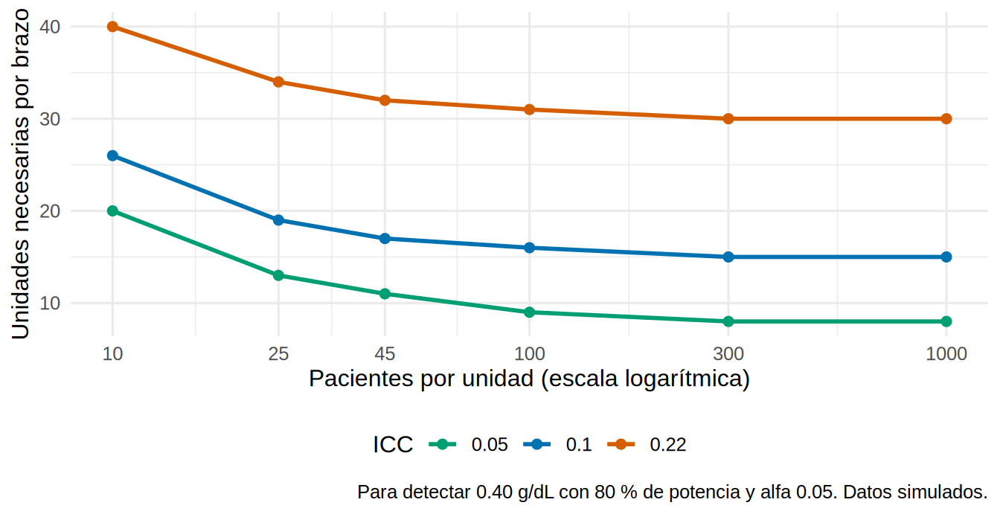

Tu red quiere probar de verdad el protocolo de EPO y hierro guiado por algoritmo. No puedes dárselo a unos pacientes y a otros no dentro de la misma unidad: el protocolo lo aplican las mismas enfermeras, con el mismo sistema, y se “contagiaría” al grupo control. Así que aleatorizas unidades: 20 reciben el protocolo y 20 siguen con la atención habitual. Ahora tienes dos preguntas: ¿cómo se analiza un ensayo así sin engañarte con 1 778 pacientes que valen mucho menos? Y, para el siguiente ensayo, ¿cuántas unidades necesitas?
Lo que vamos a hacer
Analizar el ensayo a nivel de unidad y con un modelo mixto, y compararlos con las alternativas que ya conoces.
Ver por qué, con pocos conglomerados, los errores robustos y el GEE se quedan cortos, y cómo corregirlos con clubSandwich.
Entender que con 40 unidades el azar no equilibra bien las unidades, y qué hacer (ajuste y prueba de aleatorización).
Usar el ICC y el efecto de diseño para planear cuántas unidades hacen falta (puente al Cap. 20).
Datos simulados (hd_unidades). Conocemos la verdad: el protocolo sube la hemoglobina +0.40 g/dL y multiplica las odds de hospitalización por 0.61 (condicional). La asignación se hizo al azar entre unidades, mitad y mitad dentro de cada tipo de unidad (hospitalaria o extrahospitalaria).
Paso 1. Unidad de aleatorización y unidad de análisis
En un ensayo aleatorizado por conglomerados (cluster randomised trial) se asigna al azar un grupo entero (una unidad de diálisis, una clínica, un hospital) y se mide el desenlace en los pacientes de cada grupo. Se usa cuando la intervención es del grupo (un protocolo, una capacitación), cuando hay riesgo de contaminación entre pacientes del mismo lugar o cuando es la única forma práctica de implementarla.
Lo que cambia es la pregunta de 14.1: ¿cuántas observaciones independientes tengo? La respuesta está más cerca de el número de unidades que del número de pacientes. Por eso el análisis debe respetar el nivel en que se aleatorizó. Las guías de reporte (extensión de CONSORT para ensayos por conglomerados, Campbell et al., 2012) piden justamente declarar el ICC, el número de conglomerados y cómo se tuvo en cuenta el agrupamiento.
Cargamos los datos y construimos, como en 14.1, una cifra por paciente (su hemoglobina media de 12 meses) y una cifra por unidad:
Paso 2. El análisis más honesto: un dato por unidad
El análisis a nivel de conglomerado reduce cada unidad a un número (la media de sus pacientes) y compara esos 40 números con una regresión simple. Como las medias de unidad son independientes entre sí, los supuestos de la regresión ordinaria sí se cumplen. Incluimos el tipo de unidad, porque fue la variable de estratificación del sorteo (el análisis debe reflejar el diseño):
a1<-lm(media~intervencion+tipo_unidad, data =um)# solo el diseñoa2<-lm(media~intervencion+tipo_unidad+I(edad_media-64), data =um)# + edad media de la unidadresumir_lm<-function(m, nombre){s<-summary(m)$coefficients["intervencion", ]; ic<-confint(m)["intervencion", ]tibble(analisis =nombre, efecto =s[1], ee =s[2], gl =df.residual(m), ic_inf =ic[1], ic_sup =ic[2], p =s[4])}bind_rows(resumir_lm(a1, "Nivel de unidad: diseño"), resumir_lm(a2, "Nivel de unidad: + edad media"))|>mutate(across(c(efecto, ee, ic_inf, ic_sup), \(x)round(x, 2)), p =signif(p, 2))
# A tibble: 2 × 7
analisis efecto ee gl ic_inf ic_sup p
<chr> <dbl> <dbl> <int> <dbl> <dbl> <dbl>
1 Nivel de unidad: diseño 0.51 0.15 37 0.2 0.83 0.002
2 Nivel de unidad: + edad media 0.41 0.13 36 0.14 0.67 0.0038
Qué vemos.
Con solo el diseño, el protocolo sube la hemoglobina 0.51 g/dL (IC 95 % 0.20 a 0.83), con 37 grados de libertad: 40 unidades menos 3 parámetros. Esa es la información real del ensayo.
Es una cifra mayor que la verdad (+0.40). No es sesgo del método: por azar, las unidades con protocolo resultaron más añosas (Paso 5), y las unidades con población añosa tienen más hemoglobina en esta simulación (14.2). Al añadir la edad media de la unidad, la estimación pasa a 0.41, cerca de la verdad, y el error estándar baja (de 0.15 a 0.13).
Es ajustar por una covariable basal de la unidad, algo legítimo y recomendable en un ensayo aleatorizado (se mide antes, no puede ser consecuencia del protocolo).
Una pega: este análisis da el mismo peso a una unidad de 25 pacientes que a una de 60. Está bien si las unidades son la población de interés; si quieres un efecto “por paciente”, se pondera por tamaño (weights = n) y el resultado puede cambiar un poco.
Paso 3. Un mismo ensayo, seis análisis
Ahora el análisis con los pacientes como filas, que permite ajustar por características individuales y usa todos los datos. Comparamos los métodos de 14.1-14.4 con la corrección para pocos conglomerados de clubSandwich (sus siglas: CR2, de cluster-robust variance estimator tipo 2, con grados de libertad de Satterthwaite). Todos ajustan por tipo de unidad y edad media:
f<-hb_media~intervencion+tipo_unidad+I(edad_media-64)m_lm<-lm(f, data =pm)ing<-coeftest(m_lm)["intervencion", ]# ingenuocr1<-coeftest(m_lm, vcov =vcovCL(m_lm, cluster =pm$unidad))["intervencion", ]# robusto estándar (CR1)cr2<-coef_test(m_lm, vcov ="CR2", cluster =pm$unidad)# robusto corregido (CR2) + gl de Satterthwaitecr2<-cr2["intervencion", ]# fila del coeficiente de la intervenciónmix<-lmer(update(f, .~.+(1|unidad)), data =pm)# mixto, un intercepto por unidads_sa<-coef(summary(mix, ddf ="Satterthwaite"))["intervencion", ]s_kr<-coef(summary(mix, ddf ="Kenward-Roger"))["intervencion", ]seis<-tibble( metodo =c("1. Ingenuo (lm)", "2. Robusto por unidad (CR1)", "3. Robusto corregido (CR2, clubSandwich)","4. Mixto, gl Satterthwaite", "5. Mixto, gl Kenward-Roger", "6. Nivel de unidad (Paso 2)"), efecto =c(ing[1], cr1[1], cr2$beta, s_sa[1], s_kr[1], coef(a2)["intervencion"]), ee =c(ing[2], cr1[2], cr2$SE, s_sa[2], s_kr[2], summary(a2)$coef["intervencion", 2]), gl =c(df.residual(m_lm), df.residual(m_lm), cr2$df_Satt, s_sa[3], s_kr[3], df.residual(a2)))|>mutate(ic_inf =efecto-qt(0.975, gl)*ee, ic_sup =efecto+qt(0.975, gl)*ee, p =2*pt(abs(efecto/ee), gl, lower.tail =FALSE))seis|>mutate(across(c(efecto, ee, ic_inf, ic_sup), \(x)round(x, 2)), gl =round(gl, 1), p =signif(p, 2))
El efecto es casi el mismo en todos (de 0.41 a 0.43; verdad +0.40). Lo que cambia es cuánta precisión dicen tener.
El método ingenuo (1) tiene un error estándar de 0.052, 2.6 veces menor que el del CR2 (0.138). Su intervalo es 0.33 a 0.53: demasiado optimista.
El CR2 y los modelos mixtos con grados de libertad corregidos (3-5) coinciden entre sí y con el análisis a nivel de unidad (6), con entre 29 y 36 grados de libertad, no miles. El CR1 (2) ya queda a medio camino: tiene el error estándar casi correcto, pero usa un número de grados de libertad (1774) que no existe en este ensayo.
Con 40 unidades y un diseño bastante limpio, las diferencias entre 2 y 3 son modestas (0.132 vs. 0.138). Se vuelven enormes cuando el número de unidades baja (Paso 4).
Paso 4. GEE y pocos conglomerados: el sándwich se queda corto
El estimador robusto (de sándwich) que usan el glm con vcovCL() y el GEE (14.4) es válido cuando el número de conglomerados es grande. Con pocos, subestima la varianza (cada conglomerado se usa para estimar su propia variabilidad y se “ajusta” demasiado bien a ella) y además se compara contra una normal, cuando debería usarse una t con pocos grados de libertad. Las correcciones tipo CR2 arreglan ambas cosas.
Lo comprobamos con el truco de 14.1, un experimento “placebo”: repartimos la intervención falsa al azar entre solo 6, 10, 20 o 40 unidades (elegidas al azar de las 40) y contamos cuántas veces cada método declara p < 0.05. Como el efecto verdadero es cero, debería salir ~5 %:
placebo_pocos<-function(J, reps=250){set.seed(145+J)unis<-unique(pm$unidad)p<-replicate(reps, {falso<-tibble(unidad =sample(unis, J), falso =sample(rep(0:1, length.out =J)))# J unidades, mitad y mitadd<-inner_join(pm, falso, by ="unidad")m<-lm(hb_media~falso, data =d)um_d<-d|>group_by(unidad, falso)|>summarise(media =mean(hb_media), .groups ="drop")c(`Ingenuo` =coeftest(m)["falso", 4], `Robusto CR1 (normal)` =coeftest(m, vcov =vcovCL(m, cluster =d$unidad))["falso", 4], `Robusto CR2 + Satterthwaite` =coef_test(m, vcov ="CR2", cluster =d$unidad)$p_Satt[2], `Medias de unidad (t)` =t.test(media~falso, data =um_d, var.equal =TRUE)$p.value, `Mixto (Satterthwaite)` =coef(summary(suppressMessages(lmer(hb_media~falso+(1|unidad), data =d))))["falso", 5])})rowMeans(p<0.05)}falsos<-sapply(c(6, 10, 20, 40), placebo_pocos)# tarda ~1.5 minutoscolnames(falsos)<-paste(c(6, 10, 20, 40), "unidades")round(100*falsos)# % de ensayos "positivos" cuando no hay ningún efecto
Qué vemos. (Cada cifra es un porcentaje de 250 ensayos; el error estándar del Monte Carlo es de ≈ 1.4 puntos alrededor del 5 %, así que no leas diferencias de uno o dos puntos.)
El método ingenuo “encuentra” un efecto en más de la mitad de los ensayos con cualquier número de unidades (54-62 %), como en 14.1.
El robusto estándar (CR1) funciona con 40 unidades (4 %) pero se desploma al bajar: 9 % con 20 unidades, 10 % con 10 y 18 % con 6.
El CR2 con Satterthwaite, las medias de unidad y el modelo mixto con grados de libertad corregidos se mantienen cerca del 5 % incluso con 6 unidades (entre 3 y 7 % en todas las columnas).
Con un desenlace binario (hospitalización) pasa lo mismo. Repetimos el experimento con 10 unidades: GEE con correlación intercambiable y errores robustos (como en 14.4), regresión logística con errores robustos CR1 y con CR2. (Para una regresión con correlación de trabajo independiente, un GEE da el mismo coeficiente que el glm; clubSandwich corrige el glm):
set.seed(1450)pac_o<-pac|>arrange(unidad, id)p_bin<-replicate(300, {falso<-tibble(unidad =sample(unique(pac_o$unidad), 10), falso =sample(rep(0:1, 5)))d<-inner_join(pac_o, falso, by ="unidad")|>mutate(uni =as.integer(factor(unidad)))|>as.data.frame()g<-suppressWarnings(geeglm(hospitalizado~falso, id =uni, data =d, family =binomial, corstr ="exchangeable"))gl<-glm(hospitalizado~falso, data =d, family =binomial)c(`GEE intercambiable (sándwich)` =summary(g)$coef["falso", 4], `glm + robusto CR1` =coeftest(gl, vcov =vcovCL(gl, cluster =d$uni))["falso", 4], `glm + robusto CR2 (clubSandwich)` =coef_test(gl, vcov ="CR2", cluster =d$uni)$p_Satt[2])})round(100*rowMeans(p_bin<0.05))# % de falsos positivos con 10 unidades
Con 10 unidades, el GEE y el glm con errores robustos estándar rechazan en un 9 % y un 10 % de los ensayos sin efecto; el CR2, en un 5 %. Mismo mensaje que 14.4: el GEE no es mágico con pocos conglomerados.
Veamos qué pasa con los datos reales (40 unidades, hospitalización, el modelo de 14.4). Tienes el OR de la intervención con el robusto estándar y con el corregido:
# A tibble: 2 × 5
metodo OR ic_inf ic_sup p
<chr> <dbl> <dbl> <dbl> <dbl>
1 Robusto estándar (CR1) 0.59 0.36 0.98 0.042
2 Robusto corregido (CR2) 0.59 0.34 1.02 0.059
Qué vemos. El OR es el mismo (0.59; verdad condicional 0.61), pero con la corrección el intervalo se ensancha y el valor p pasa de 0.042 a 0.059: de “significativo” a “en el límite”. Con 40 unidades la diferencia ya puede cambiar una conclusión; con menos unidades, crece. (El mismo CR2 existe para modelos mixtos: coef_test(modelo_lmer, vcov = "CR2", cluster = ...).)
Paso 5. Con 40 unidades el azar no equilibra bien
La aleatorización garantiza que en promedio los grupos son comparables, no que lo sean en este ensayo. Con 40 unidades, la edad media de las unidades puede diferir bastante entre brazos. Medimos cuánto repitiendo el sorteo 5 000 veces (con la misma estratificación por tipo de unidad). En cada repetición calculamos tres cosas: la diferencia de edad media entre brazos, la diferencia de hemoglobina entre brazos y el efecto ajustado por la edad media:
Las unidades con protocolo son 2.4 años más añosas, algo que el sorteo produce un 22 % de las veces: no es raro. La desviación estándar de esa diferencia entre sorteos es de 1.9 años. Como la edad media de la unidad predice la hemoglobina (14.2), esa diferencia ensucia la comparación cruda. Hay dos herramientas:
En el análisis: ajustar por la covariable basal de la unidad (Pasos 2-3). Es lo que hicimos.
En el diseño: estratificar (como aquí) o usar aleatorización restringida por covariables, que acepta solo los sorteos con un desequilibrio pequeño. Por ejemplo, solo un 39 % de los sorteos deja una diferencia de edad menor de un año. (Si restringes, el análisis debe incluir las covariables usadas en la restricción.)
Los 5 000 sorteos sirven además para una prueba de aleatorización: la distribución del efecto cuando no hay efecto, construida con el propio diseño, sin supuestos de normalidad ni de grados de libertad. Es una buena alternativa cuando hay pocos conglomerados:
Ambos p son pequeños (0.0020 para la diferencia cruda y 0.0024 para el efecto ajustado; con 5 000 sorteos, el mínimo posible es 0.0002), de acuerdo con el análisis a nivel de unidad: el protocolo sí parece mejorar la hemoglobina. Este es el análisis que mejor refleja cómo se generaron los datos (por sorteo de unidades).
Paso 6. ICC, efecto de diseño y el ensayo siguiente
Para planear un ensayo por conglomerados necesitas tres números: cuánto se parecen los pacientes de una misma unidad (ICC), cuántos pacientes habrá en cada unidad (m) y qué tan variables son esos tamaños. Con ellos, el efecto de diseño (14.1) dice cuánto hay que “inflar” el tamaño de muestra de un ensayo con pacientes independientes:
El ICC es 0.22, las unidades tienen 44 pacientes en promedio (CV de 0.27) y la DE de la hemoglobina media por paciente es 1.15 g/dL. El efecto de diseño ronda 11: cada paciente aporta una décima parte de la información de un paciente independiente.
¿Con 20 unidades por brazo había potencia? Para detectar los 0.40 g/dL de la verdad, con los números anteriores (potencia_conglomerados() y unidades_necesarias() están en R/funciones_extra_cap14.R):
Con 20 unidades por brazo, la potencia para un efecto de 0.40 g/dL es de solo 56 %; para llegar al 80 % harían falta unas 35 unidades por brazo (70 en total). El ensayo “salió” significativo, pero con una potencia modesta para el efecto verdadero. En ensayos así, los resultados significativos tienden a sobreestimar el efecto (aquí, la estimación cruda de 0.51 frente a 0.40; en este caso por el desequilibrio de edad del Paso 5).
¿Y si en cada unidad pongo más pacientes? No ayuda tanto como parece. La tabla muestra las unidades por brazo necesarias según el ICC y el número de pacientes por unidad:
ggplot(rejilla, aes(m, k, color =factor(icc)))+geom_line(linewidth =1)+geom_point(size =2)+scale_x_log10(breaks =c(10, 25, 45, 100, 300, 1000))+scale_color_manual(values =c("0.05"="#009E73", "0.1"="#0072B2", "0.22"="#D55E00"), name ="ICC")+labs(x ="Pacientes por unidad (escala logarítmica)", y ="Unidades necesarias por brazo", caption ="Para detectar 0.40 g/dL con 80 % de potencia y alfa 0.05. Datos simulados.")+theme(legend.position ="bottom")

Qué vemos. Con un ICC de 0.22, pasar de 45 a 1 000 pacientes por unidad (¡22 veces más pacientes!) reduce las unidades necesarias de 32 a 30 por brazo. El efecto de diseño tiene un tope: aunque m crezca, la parte de la varianza que está entre unidades (el ICC) no se promedia, y la media de cada unidad nunca será más precisa que eso. Lo que falta son más unidades, no más pacientes por unidad. Con un ICC bajo (0.05) aumentar m ayuda más (de 20 a 11 unidades por brazo al pasar de 10 a 45 pacientes), pero también se estanca (8 con 1 000). De ahí que el ICC mal estimado sea el mayor riesgo de un cálculo de tamaño: pide siempre un rango (pilotos, estudios previos, bases de datos de la red) y planea con la cifra conservadora.
Este es el puente al Cap. 20: allí (20.4) se profundiza en el cálculo con el efecto de diseño y (20.5) se verifica por simulación, que es la herramienta cuando el diseño se complica (ICC distintos por brazo, tamaños muy desiguales, desenlaces binarios o con ajuste por covariables).
Advertencia⚠️ Trampas frecuentes
Analizar un ensayo por conglomerados como si fuera individual. Es el error más común y el que más falsos positivos produce (Paso 4: más del 50 %). Antes de elegir el método pregunta: ¿qué se aleatorizó?
Dar por buenos los errores robustos con pocos conglomerados. Con menos de ~40 unidades usa una corrección (CR2 + Satterthwaite, Kenward-Roger en un modelo mixto) o analiza a nivel de conglomerado. Con muy pocos (en el experimento, 3 por brazo) las correcciones mantienen el error tipo I, pero la potencia es mínima y los supuestos pesan mucho; la prueba de aleatorización es la opción más honesta.
Compensar pocos conglomerados con muchos pacientes. Aumentar m tiene rendimientos decrecientes (Paso 6); los conglomerados son los que dan la potencia.
En un modelo mixto, los grados de libertad de lmerTest (Satterthwaite) o de Kenward-Roger (requiere pbkrtest) son la forma habitual de pedir la corrección.
Si no puedes dividir las unidades en dos brazos, existen diseños alternativos: cruzados por conglomerado (cada unidad recibe ambos tratamientos en períodos distintos) y escalonados (stepped-wedge, todas empiezan sin el protocolo y lo incorporan en orden aleatorio). Ambos exigen modelar el tiempo y se verán en lecturas más avanzadas (Hayes y Moulton, 2017).
Importante🎯 En resumen
En un ensayo por conglomerados se aleatoriza el grupo; el análisis debe respetar ese nivel. Con 40 unidades, la información real es la de 40 datos, no la de 1 778 pacientes.
Los análisis válidos coinciden: a nivel de unidad, modelo mixto con grados de libertad corregidos y robusto CR2 (0.41 a 0.43 g/dL; verdad +0.40). El ingenuo tiene un error estándar 2.6 veces menor.
Con pocos conglomerados (< 40), el robusto estándar y el GEE rechazan de más (con 10 unidades, 10 % de falsos positivos en lugar de 5 %); corrige con CR2 + Satterthwaite o usa el modelo mixto.
Ajusta por covariables basales de la unidad y estratifica el sorteo: con pocas unidades el azar no equilibra (diferencia de edad de 2.4 años aquí).
El efecto de diseño (1 + [(CV² + 1)·m − 1]·ICC ≈ 11) convierte 1 778 pacientes en unos 156 independientes. Para el próximo ensayo se necesitarían ≈ 35 unidades por brazo, y aumentar m no lo arregla.
Ejercicio
Repite el cálculo de ICC y de unidades necesarias con la hospitalización (icc_anova(pac$hospitalizado, pac$unidad)). ¿Qué ICC obtienes? ¿Y qué diferencia (en puntos de riesgo) necesitarías para planear con proporciones?
En el experimento del Paso 4, cambia el desenlace por la albúmina (otra variable medida por paciente) y mira si el CR1 falla igual con 10 unidades.
Calcula la potencia con potencia_conglomerados() para 20 unidades por brazo si el ICC fuera 0.10 en lugar de 0.22. ¿Cuánto cambia? ¿Qué te dice sobre la importancia de estimar bien el ICC?